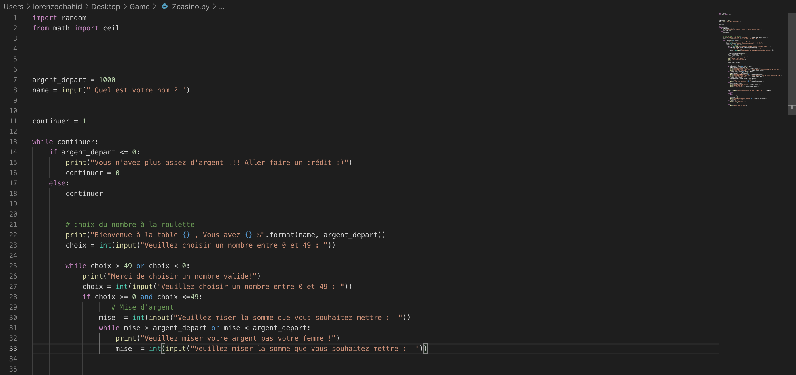
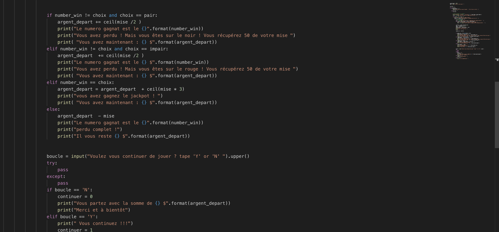
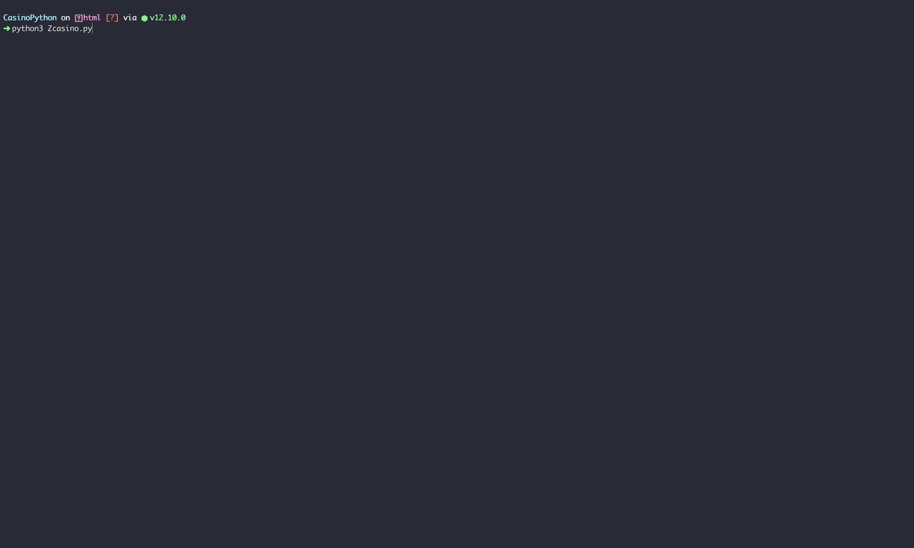
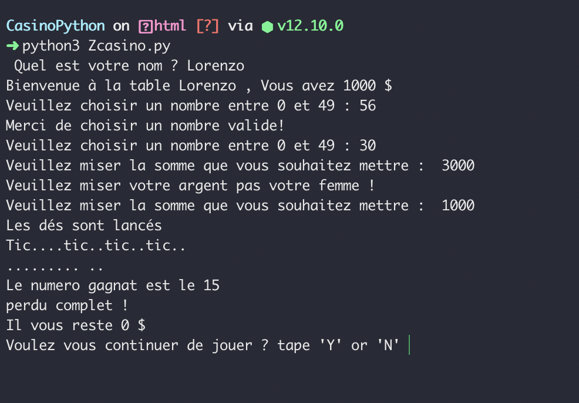
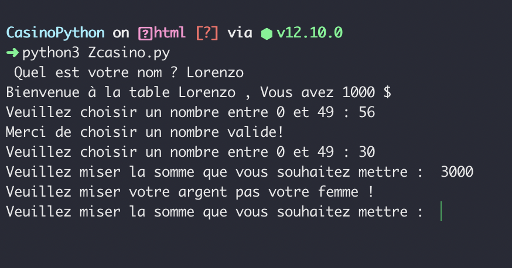
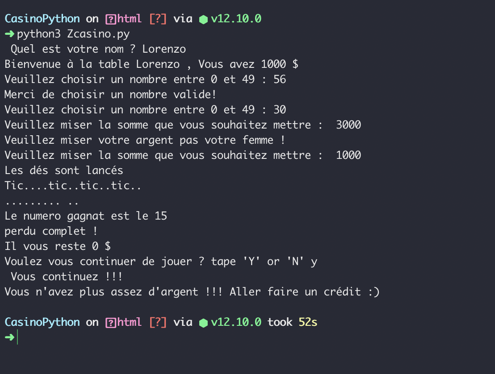

Ici une image du code, on peut voir les imports, ainsi que la majorités des boulces while

Quelques conditons

Commande à lancer directement situé le dossier !

Ici une fin de partie ou le joueur à le choix de continuer ou non

On peut voir une exception, le joueur veut miser plus que l'argent qu'il possède !

Si le joueur n'a pas assez d'argent pour continuer le jeu s'arrête pour lui !